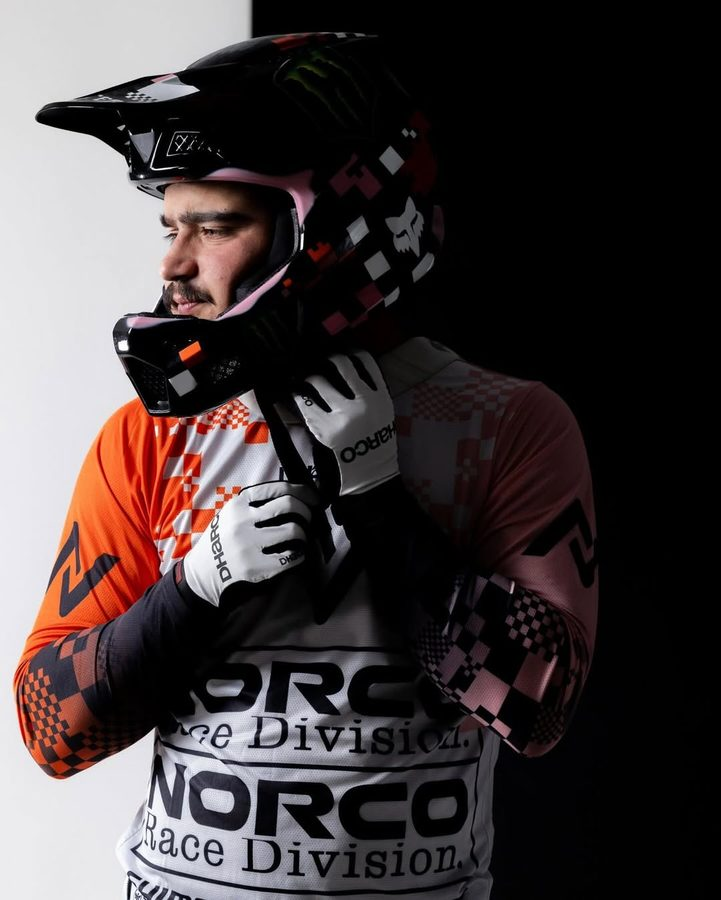

Bodhi Kuhn
- N/A
Bodhi Kuhn is a Canada downhill rider competing for Norco Race Division. RidersFanatics currently tracks 7 equipment items for this 2026 race setup, including Norco Aurum HSP, Fox 40 Factory, Fox Float X2 Factory. The season record below contains 4 tracked results and 234 cumulative points.
2026 season snapshot
Bodhi Kuhn is currently ranked 21st of 42 riders in the tracked Men Elite field, with 234 points across 4 recorded starts. The strongest recorded finish is 9th at La Thuile, Italy (July). The season sample contains 0 podiums and 1 top-ten result.
Analysis is limited to results recorded in the RidersFanatics dataset and should not be read as a complete career assessment.
- 21st
- Category rank
- 4
- Recorded starts
- 9th
- Best finish
- 234
- Points


Protection
Setup analysis
The recorded 2026 build contains 7 identified equipment items. Its documented chassis combines a Norco Aurum HSP frame, a Fox 40 Factory fork, a Fox Float X2 Factory rear shock. These entries describe the documented race platform; settings, compounds and prototype internals can change by event.
Page generated from the dataset updated 2026-08-10. Equipment is revised when a verifiable change is identified. Read the methodology or report a correction.
Results
| Year | Event | Result | Points |
|---|---|---|---|
| 2026 | Loudenvielle, France (May) | 27th | 34 |
| 2026 | Leogang, Austria (June) | 14th | 55 |
| 2026 | Switzerland (June) | 12th | 65 |
| 2026 | La Thuile, Italy (July) | 9th | 80 |